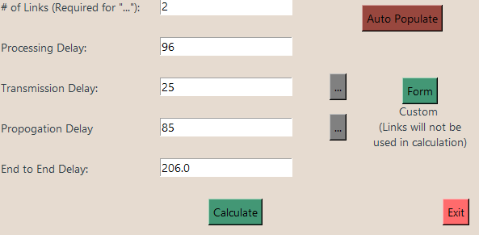

This was a python project for my graduate networks class. It features an in-depth End-End calculator as well as a simulation
of TCP congestion all contained within a tkinter UI.

The End-End Delay calculator take the # of Links, Processing Delay, Transmission Delay, and Propogation Delay as inputs.
The Transmission and Propogation Delay inputs have optional subwindows. In the Transmission window you can alter the packet
size and the tansmission rate of each link. In the Propogation window, you can set the length and propogation rate of each link.
In addition to the End-End delay calculator I developed a TCP congestion window simulator. This simulation takes bytes as in input,
and returns throughput, packets dropped, time elapsed, as well as a visual representation of the congestion window.